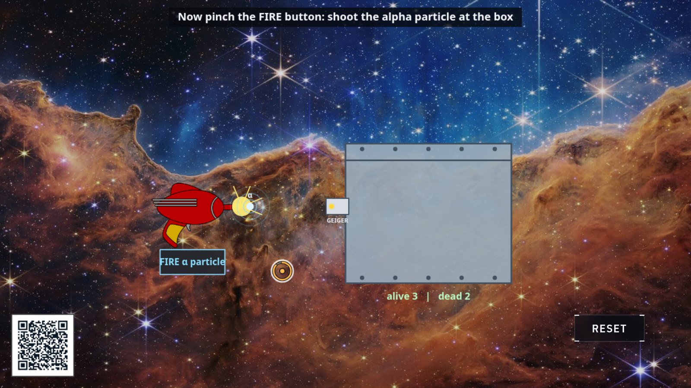

Quantum mechanics · measurement
Schrödinger's cat
In 1935 Erwin Schrödinger invented this setup as a protest: quantum rules, taken seriously, seemed to put a cat in two states at once. Here, you get to run it.

At the display
- Pinch the cat and set it in the chamber. Inside are the props of 1935: a Geiger tube, a spring hammer, and a sealed flask the cat should be worried about.
- Pinch FIRE. One alpha particle flies at the Geiger tube, and whether the tube clicks comes down to a genuine fifty-fifty quantum coin.
- While the box is closed, study the cutaway. Both stories play at once, ghosted over each other. Then pinch the box to open it. Looking is the move that picks one.
What's really happening
Whether one radioactive particle triggers a detector is, as far as physics can tell, genuinely undecided in advance; it resembles a coin still spinning in the air rather than one already hidden under a hand. Quantum theory describes the particle after firing as being in a superposition, detected and undetected at once, with definite odds. The display rolls those odds honestly.
Schrödinger's trick was to weld that tiny uncertainty to a cat-sized consequence. The Geiger tube trips the hammer, the hammer tips the flask, and the flask decides the cat. If the particle counts as both until measured, then so does the whole chain, and the sealed box holds a cat that is alive and dead together. He offered it as a ridiculous case. His point was that the theory owed the world an explanation of when two possibilities become one fact.
That question, what exactly counts as a measurement and when the superposition collapses, is still debated today, ninety years on. On one thing everyone agrees: open the box and you will find one cat, with the statistics of an honest coin. The tally under the chamber is your growing experimental record.